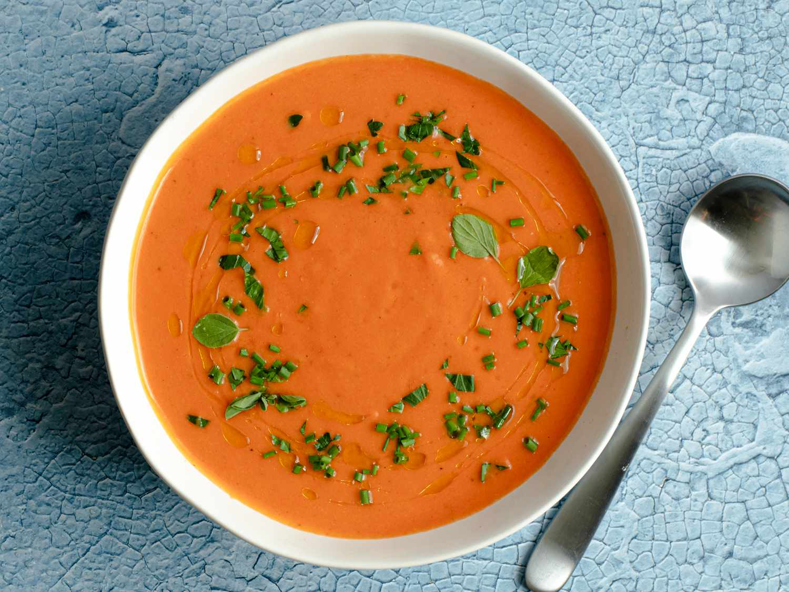

Gazpacho

Description
Gazpacho is a refreshing, cold soup that originates from Spain, made with a blend of ripe tomatoes, cucumbers, bell peppers, onions, garlic, and olive oil. This chilled dish is typically enjoyed during the hot summer months, offering a light and nutritious meal. The combination of fresh vegetables creates a vibrant, tangy flavor that is both satisfying and cooling.
Often served as an appetizer or light lunch, gazpacho is a staple in Spanish cuisine, particularly in the southern region of Andalusia. Its simplicity and adaptability allow for different variations, with some recipes incorporating herbs, bread, or vinegar to enhance the flavor. Gazpacho’s smooth texture and fresh taste make it a go-to dish for those seeking a healthy and refreshing option.
ingredients
- Hearty Bread
- Tomatoes
- Green bell peppers
- Red onion
- Cucumbers
- Garlic
- Oregano
- Salt and pepper
- Olive oil
- Vinegar
Steps
- Place bread in bottom of a large bowl. Add half of the tomatoes in an even layer on top and season generously with salt and pepper. Add cucumber, onion, bell pepper, and garlic. Sprinkle with oregano and season generously with salt and pepper. Add remaining tomatoes and sprinkle with more salt and pepper. Drizzle oil and vinegar over the top. Let rest at room temperature for 30 minutes.
- Toss all ingredients with a wooden spoon or by hand until they are evenly incorporated. Transfer half of the contents, including liquid at bottom of bowl, to the jar of a blender. Blend on high speed until completely smooth, about 3 minutes. Press mixture through a fine-mesh strainer into a large bowl. Repeat with remaining soup (you may need to work in more batches). Season soup with more salt, pepper, and vinegar as desired.
- Serve immediately, garnish with chopped herbs and drizzle with extra-virgin olive oil, or chill for up to 3 days before serving.